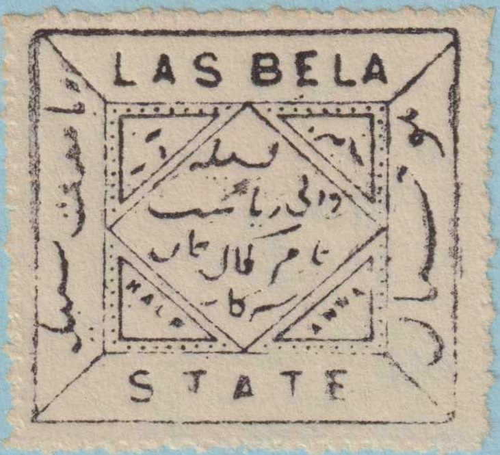
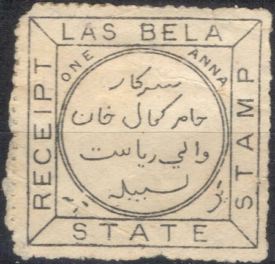
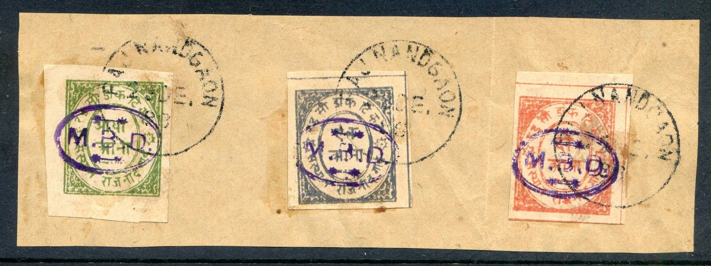
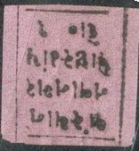
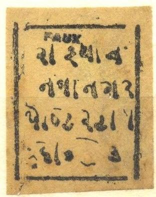
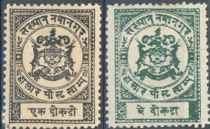
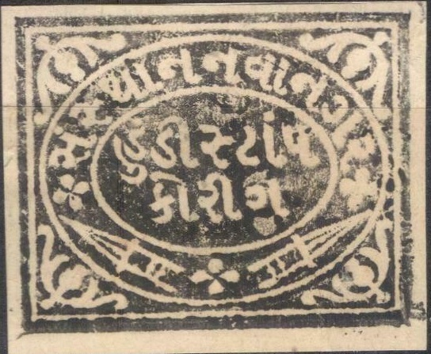

{kind=link}


Note: on my website many of the
pictures can not be seen! They are of course present in the
catalogue;
contact me if you want to purchase it.
1/2 a black on blue 1 a black on red (1901)
Value of the stamps |
|||
vc = very common c = common * = not so common ** = uncommon |
*** = very uncommon R = rare RR = very rare RRR = extremely rare |
||
| Value | Unused | Used | Remarks |
| 1/2 a | * | * | Exists printed with larger margins Also a misprint "LAS BFLA" exists. |
| 1 a | ** | ** | |
In 1907 Las Bela stopped issuing its own stamps.
Typical cancels.
Most likely a forgery. "L" of "LAS" slanting
backwards, dot in front of this letter. "E" of
"BELA" has a smudge on top of it. The printing looks
rather poor compared to a genuine stamp.
Most likely forgeries with a very different perforation.

1899 Las Bela: fiscal stamp, inscription "LAS BELA STATE
RECEIPT STAMP"
Morvi issued stamps from 1931 on, examples:
(Inscription "MORVI STATE POSTAGE")
Reduced sizes
1/2 a blue 2 a red Surcharged with "M.B.D." (actually a cancel)
(Sorry, no picture available yet)
1/2 a blue 2 a red
Value of the stamps |
|||
vc = very common c = common * = not so common ** = uncommon |
*** = very uncommon R = rare RR = very rare RRR = extremely rare |
||
| Value | Unused | Used | Remarks |
| 1/2 a | * | ** | |
| 2 a | ** | *** | |
| Surcharged with 'M.B.D.' (actually a cancel) | |||
| 1/2 a | - | ** | |
| 2 a | - | *** | |
I do not know if genuinely used cancelled stamps exist. I've seen many stamps with a "RAJ NANDGAON 23 DE" cancel (sometimes with year '98' added on the next issues).
Stamp with "NANDGAON 23 DE" cancel
Forgeries exist, printed in sheets of 6 with minor varieties in each of the six forgeries. They have "OP" instead of "CP".
Another very badly printed forgery, next to it a forgery of the
next issue probably made by the same forger. It is printed on the
same brownish paper.

A whole bunch of forgeries of different states, all made by the
same forger, I presume.
1/2 a green 1 a red 2 a red Surcharged with 'M.B.D.' 1/2 a green 1 a red 1 a brown (reprint) 1 a blue (reprint) 2 a red
Value of the stamps |
|||
vc = very common c = common * = not so common ** = uncommon |
*** = very uncommon R = rare RR = very rare RRR = extremely rare |
||
| Value | Unused | Used | Remarks |
| 1/2 a | * | ** | |
| 1 a red | * | ** | |
| 2 a | * | ** | |
| Surcharged with 'M.B.D.' (actually a cancel) | |||
| 1/2 a | - | ** | |
| 1 a red | - | ** | |
| 1 a brown | - | ? | Reprint |
| 1 a blue | - | ? | Reprint |
| 2 a | - | ** | |

Reprints with "PAJ NANDGAON 23 DE. 98" cancel.
Forgeries:
Another very badly printed forgery, next to it a forgery of the
previous issue probably made by the same forger. It is listed in
http://www.princelystates.com/CurrentIssue/ff-04-01d.shtml.
1 p blue
Value of the stamps |
|||
vc = very common c = common * = not so common ** = uncommon |
*** = very uncommon R = rare RR = very rare RRR = extremely rare |
||
| Value | Unused | Used | Remarks |
| 1 p | c | * | |
Modern forgery.

1 p black on red 2 p black on green 3 p black on yellow
Value of the stamps |
|||
vc = very common c = common * = not so common ** = uncommon |
*** = very uncommon R = rare RR = very rare RRR = extremely rare |
||
| Value | Unused | Used | Remarks |
| 1 p | * | ** | |
| 2 p | * | *** | |
| 3 p | * | *** | |
I've been told that the next stamps are forgeries:
(Forgeries)

Fournier forgeries from a 'Fournier Album of Philatelic
Forgeries' with "FAUX" overprint.I don't know the
distinguishing characteristics, left two images reduced sizes.

Forgeries as sold by the forger Fournier
(reduced sizes); images found in a 'Fournier Album'. From left to
right; a forgery of Fardikot, one from Jammu and Kashmir and one
from Nawanagar.

Another set of forgeries from the Fournier Album, the last one is
from Nawanagar.
Sheet of forgeries in wrong color orange.

1 p black 2 p green 3 p orange
Value of the stamps |
|||
vc = very common c = common * = not so common ** = uncommon |
*** = very uncommon R = rare RR = very rare RRR = extremely rare |
||
| Value | Unused | Used | Remarks |
| 1 p | * | ** | |
| 2 p | ** | ** | |
| 3 p | ** | *** | |
The cancel on this stamp is not the usual cancel, probably some
kind of remainder cancel.
Imperforate forgeries exist with the central arms design different (and other minor differences). I've seen the same forgery perforated (1 p black).
Imperforate forgeries, reduced sizes
A whole bunch of forgeries of different states, all made by the
same forger, I presume.
Here the same forgery again, it is very badly printed. The
central arms are a mere blotch.
Nawanagar used stamps of India from the end of 1895 onwards.

Fiscal stamp of Nawanagar of 1887 with Indian inscriptions only.
Also a 1890 fiscal stamp with inscription "NAWANAGAR
STATE" in green.
A bogus fiscal stamp of Nawanagar of 6 p red, with a lion and a palm tree is mentioned in the Forbin guide. I have never seen this stamp.
Stamps - Timbres - Briefmarken - Postzegels
{kind=link}
{kind=link}
{kind=link}
{kind=link}
{kind=link}
{kind=link}